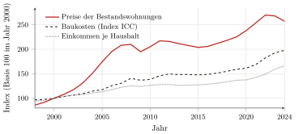

— KI-Übersetzung — Claude Fable 5 (Anthropic)
Erster Teil — Theorie der Rente und des Raums · Kapitel 4
4 Vom Boden zum gebauten Raum: die Lage als kollektives Produkt und privater Wegzoll
Der (soziale) Raum ist ein (soziales) Produkt.
Henri Lefebvre, La Production de l’espace (Lefebvre 1974).
Die drei vorangegangenen Kapitel haben die Rente bis zu ihrer vollendeten kapitalistischen Form geführt — aber auf dem Agrarboden, dem Boden Ricardos und Marx’, der Pächter und der Felder. Nun ist der Gegenstand dieses Buches nicht der Weizen: Es sind die Wohnung, das Büro, das Lager — der gebaute Raum, dort, wo der Nutzer lebt und arbeitet. Es gilt also, den Schritt zu tun: die Gesetze der Rente vom bebauten Land auf den gebauten Raum zu übertragen. Dieser Schritt ist keineswegs ein Gewaltstreich; Marx hat ihn eingeleitet, und die Schule, die ihm folgte — Lefebvre, Lipietz, Harvey —, hat ihn vollendet. Er enthüllt dabei, was wohl den ganzen ersten Teil bestimmt: Was die Fruchtbarkeit für das Land war, ist die Lage für den städtischen Boden. Aber die Lage ist, anders als die Fruchtbarkeit, keine natürliche Eigenschaft des Bodens: Sie ist ein kollektives Produkt. Die Bedingung, die Kapitel 1 für ein Gegebenes hielt, wird hier zu einer gesellschaftlichen Fabrikation — und sie ist es, die der Eigentümer einstreicht, ohne sie geschaffen zu haben. Das ist die These des Kapitels: Die städtische Rente ist der Wegzoll, erhoben auf einen Wert, den alle produzieren und den ein Einzelner abschöpft.
4.1 Die Übertragung der Rentengesetze: von der Fruchtbarkeit zur Lage
Der erste Schritt der Übertragung ist nicht der unsrige: Er ist der von Marx. Im Kapitel xlvi des Buches III („Die Rente der Bauterrains. Die Rente der Bergwerke. Der Preis des Bodens“) dehnt er die Analyse der Rente auf den städtischen Boden aus, und er vollzieht dort die entscheidende Verschiebung: Was beim Agrarland an der Fruchtbarkeit hing, hängt fortan am Standort. Die Renten der Bauterrains „sind in erster Linie durch den überwiegenden Einfluss gekennzeichnet, den dort die Lage spielt“.1 Das Gesetz der Differentialrente überträgt sich dann Glied für Glied: Wo gleiche Kapitale, auf ungleich fruchtbare Böden angewandt, ungleiche Produkte ergaben, ergeben gleiche Kapitale, auf ungleich gelegene Parzellen investiert, ungleiche Erträge; der Abstand verwandelt sich in Surplusprofit und der Surplusprofit in Rente zugunsten des Bodeneigentümers. Die Schranke des Eigentums überträgt sich ebenso: Der am schlechtesten gelegene Standort ist nicht rentefrei, denn man muss nun einmal irgendwo sein, und kein Grundstück wird unentgeltlich überlassen, solange das Privateigentum am Boden dauert (Kapitel 3).
Diese Übertragung hat die marxistische Ökonomie französischer Sprache systematisiert, und ihr gebührt der Verdienst. Es ist Alain Lipietz, der sie als Erster auf ihren Begriff gebracht hat, in einem Buch, dessen Titel schon unsere ganze These sagt: Le tribut foncier urbain (1974).2 Er ersetzt dort Fruchtbarkeit und Entfernung durch eine „Prädisposition“ der Böden, die er die ökonomische und soziale Teilung des Raums nennt: Ein Viertel eignet sich durch seine Anbindung, seine Nachbarschaft, seine Einrichtungen für diesen oder jenen Gebrauch und wertet ihn auf — und diese Prädisposition, nicht irgendeine Tugend des Bodens, bestimmt die Rente.3 Vor allem legt er die Natur des Rechts frei, das die Erhebung erlaubt. Es ist keine produktive Fähigkeit; es ist „ein rein politisches Eigentum: eine Karte der ‚Rechte auf‘“, das Recht, von jedem, der die Parzelle nutzen will, einen Tribut zu erheben.4 Dieselbe Schule hat die Furche vertieft: Sie hat gezeigt, wie der Bauträger, Zwischenagent zwischen Bodenmarkt, Finanzmarkt und Baustelle, den Lagesurplusprofit in Rente verwandelt, und warum die Wohnung eine „unmögliche Ware“ bleibt; sie hat die Form des städtischen Raums auf das Bündnis von Staat und Großkapital zurückgeführt.5 Bleibt der Punkt festzustellen, den diese Schule setzt, den dieses Buch aber ins Zentrum rücken will: dass die Lage, die die Rente macht, ein gemeinsames Werk ist.
4.2 Die Lage ist ein kollektives Produkt
Warum ist eine Parzelle mehr wert als eine andere? Nicht weil ihr Eigentümer sie verbessert hat — hat er es getan, Drainage oder Gebäude, so ist das einverleibtes Kapital, eine wirkliche Produktion, deren Zins keine Rente ist (Kapitel 3). Eine Parzelle ist mehr wert, weil sie besser gelegen ist: nahe dem Zentrum, den Verkehrsmitteln, den Arbeitsplätzen, den Schulen, den Geschäften, den anderen. Doch nichts davon ist das Werk des Eigentümers. Der Standortwert wird durch die Gegenwart und die Aktivität aller produziert — der Nachbarn, der Passanten, der öffentlichen Dienste, der Generationen, die die Stadt gebaut haben. Das ist es, was Lefebvre in einer klassisch gewordenen Formel festgestellt hat: Der Raum ist kein neutraler Behälter, in dem die Dinge sich einordnen würden, sondern ein soziales Produkt, abgesondert von der Gesamtaktivität einer Gesellschaft.6
Das Herz dieser Produktion ist die Zentralität. Die Stadt, schreibt Lefebvre, ist eher ein „Werk“ als ein Produkt: der Effekt von Versammlung und Gleichzeitigkeit, durch den sich an einem Ort die Menschen, die Aktivitäten, die Reichtümer und der Austausch konzentrieren.7 Diese Zentralität ist eine Externalität im strengen Sinn: Niemand produziert sie allein, und jeder trägt durch seine bloße Gegenwart zu ihr bei. Ein Standort ist begehrenswert, weil alle anderen da sind; sein Wert ist der Schattenwurf des kollektiven Werks, das die Stadt ist, auf eine Parzelle. Dieser Punkt verschiebt die These des Kapitels 1. Dort bedingte der Boden den Zugang, und seine Bedingung galt als natürliches Gegebenes, aller Arbeit vorausliegend. Hier ist die Bedingung selbst — die Lage — fabriziert, und fabriziert von der gesamten Kollektivität. Der Eigentümer des städtischen Bodens begnügt sich nicht damit, nichts zu produzieren: Er streicht, als wäre er ihr Urheber, den Wert einer Sache ein, die alle gemacht haben. Darum notiert Lefebvre, dass in dieser Bewegung „der städtische Boden in den Tauschwert eintritt“: Das gemeinsame Werk wird in einen privaten Titel konvertiert.8
4.3 … privat abgeschöpft
Diesen von allen produzierten Wert schöpft der Eigentümer vollständig ab, und er schöpft ihn als Transfer ab, nicht als Produktion. Das ist die Demonstration David Harveys. Schon in seiner Studie über Baltimore prägt er die Kategorie der Klassenmonopolrente: das Einkommen, das eine Klasse von Inhabern — Vermieter, Finanziers — aus einer lebenswichtigen und knappen Ressource zieht, indem sie der Klasse der Nutzer eine garantierte „Mindestrendite“ auferlegt, durch das bloße Spiel ihrer Macht und einer strukturierten Knappheit.9 Dreißig Jahre später gibt er die allgemeine Formel: „Jede Rente beruht auf der Monopolmacht privater Eigentümer über bestimmte Teile des Erdballs“.10 Und er stellt, besser als irgendjemand, die Frage, die im Zentrum dieses Buches steht. Was den Wert eines Ortes macht, zeigt er, ist ein „kollektives symbolisches Kapital“, Zeichen der Distinktion, „zu denen jeder beigetragen hat, heute wie in der Vergangenheit“; warum also „die an dieses symbolische Kapital geknüpfte Monopolrente von den multinationalen Konzernen allein oder von einem schmalen Segment der örtlichen Bourgeoisie abschöpfen lassen“?11 Die Frage ist genau die der umgedrehten trinitarischen Formel: Ein Dritter (der Eigentümer des Bodens) schiebt sich zwischen das kollektive Werk und seine Urheber, um den Wegzoll darauf zu erheben.
Die Untersuchung der 1970er Jahre hatte es auf dem konkretesten Terrain festgestellt. Bei fast gleichen Baukosten verkauft sich derselbe gebaute Quadratmeter in einem schönen Viertel weit teurer als in einer Arbeitervorstadt; es ist dieser Lagesurplusprofit, und er allein, den der Eigentümer des Bodens in Form des Grundstückspreises abschöpft.12 Der städtische Wegzoll hat damit seine vollendete Gestalt: Der Eigentümer hält die Tür eines Standorts, den alle begehrenswert gemacht haben, und lässt den Durchgang bezahlen — der Gebrauchswert der Stadt, gemeinsames Werk, wird als Tauschwert eines privaten Titels konfisziert.13
4.4 Der Beweis durch die Preise: Es ist die Lage, nicht das Gebaute
Diese These bestätigt sich an den Preisen, und die Bestätigung ist umso beweiskräftiger, als sie aus einer des Marxismus unverdächtigen Quelle kommt. Um sie zu liefern, muss man zunächst die Scheidung vornehmen, die die Disziplin des Kapitels 3 gebietet: im Preis einer Wohnung das trennen, was eine wirkliche Produktion bezahlt — das Gebaute, Werk von Maurern, abschreibbar, legitim —, von dem, was das bloße Innehaben des Bodens bezahlt. Nun überwiegt das Zweite massiv das Erste, und zwar zunehmend. Der staatliche Statistiker stellt es fest durch das, was er die „Rückwärtsrechnung“ nennt: Der Bauträger setzt den Preis, den er für ein Grundstück zahlen kann, fest, indem er vom Preis der Wohnungen der Nachbarschaft ausgeht und seine Kosten abzieht. Sodass, schließt der Statistiker, „es der Preis der Wohnungen der Nachbarschaft ist, der […] den Preis der Grundstücke bestimmt, und nicht umgekehrt“.14 Der Preis des Bodens ist keine Kosten, die in den Preis der Wohnung eingingen: Er ist das Residuum, das der Preis der Wohnung dem Eigentümer lässt, sobald die Produktion bezahlt ist.
Die Größenordnungen bestätigen die Scheidung. Von 2000 bis 2020 ist der Index der Baukosten um etwa 60 % gestiegen, während der Preis der Bestandswohnungen mit 2,3 bis 2,7 multipliziert wurde: Der Abstand, das heißt das Wesentliche des Anstiegs, ist dem Boden zuzurechnen, nicht den Ziegeln (Abbildung 1.1).15 Man kann es anders sagen, und krasser, indem man den Marktpreis mit den realen ökonomischen Kosten einer Wohnung vergleicht — das Gebaute abgeschrieben, der Unterhalt, der Boden mit null angesetzt: In Paris kostet das Wohnen etwa das Fünffache dieser Kosten, und der Kauf mehr als das Doppelte; der Teil, der darüber hinausgeht, ist nichts anderes als der Lagetribut.16 Die reine Form dieser Lagerente liest sich dort ab, wo die Zentralität extrem ist: Ein Geschäft auf den Champs-Élysées zahlt eine Miete, die mehrere hundert Mal die ökonomischen Kosten seines Lokals erreichen kann — nicht weil man dort anders baut, sondern weil der Adresswert, von der ganzen Stadt produziert, dort in reinem Zustand abgeschöpft wird.17

Bilanz
Am Ende dieser Übertragung hat das Buch seinen Gegenstand erreicht: Auf dem städtischen Boden ist, was die Fruchtbarkeit für das Land war, die Lage für den gebauten Raum; aber die Lage ist ein System von Erreichbarkeiten und Externalitäten, kollektiv produziert (das Werk der ganzen Stadt) und privat abgeschöpft vom Eigentümer des Bodens, der in keiner Weise ihr Urheber ist. Die städtische Rente ist also, wie die Agrarrente, ein Tribut und keine Produktion: der Wegzoll, erhoben auf einen gemeinsamen Wert. Sie ist sogar dessen klarste Form, denn hier kann niemand vorgeben, der Boden „produziere“: Was den Wert eines Standorts macht, ist sichtbar die Gegenwart der anderen.
Von diesem Befund gehen zwei Fäden aus, die die folgenden Teile aufnehmen werden. Der eine führt zur Messung. Zum Zinssatz kapitalisiert, wird die Lagerente ein Preis, und der Titel auf den Boden „wird eine Form fiktiven Kapitals“: ein Aktivum, bewertet durch den Tributstrom, den es verspricht, in das sich das überschüssige Kapital ergießt wie in einen „zweiten Kreislauf“.18 Es ist der Keim der Finanzialisierung des Wohnens: Teil III wird sie messen, in Euro, und darauf achten, diesen Tribut niemals als Produktion zu zählen. Der andere Faden führt zum Subjekt. Wenn der Wert der Stadt von allen produziert und von einem Einzelnen abgeschöpft wird, dann ist die Trennlinie gezogen: auf der einen Seite der Nutzer, der zahlt, um den Ort zu bewohnen und zu bearbeiten, den er mit am Leben erhält; auf der anderen der Rentier, der einstreicht. Lefebvre hat daraus die Losung gezogen, die den ganzen Teil IV bestimmt — das „Recht auf Stadt“, „ein Schrei und eine Forderung“: das Recht derer, die die Stadt machen, sie sich wieder anzueignen.19 Aber es ist das folgende Kapitel, das dieses Subjekt zuerst streng begründen muss — festzustellen, wer der Nutzer ist, wer der Rentier, und warum sie die beiden Pole ein und desselben Verhältnisses bilden: Dort liegt der begriffliche Schlussstein des Buches.
(Marx 1894), Kap. xlvi. Die Differentialrente der Lage, beim agrarischen Marx bloß zweite Determinante (Kap. xxxix, und hier Kapitel 3), wird in der Stadt zur vorherrschenden Determinante. Man legt hier nicht erneut die beiden anderen Motive desselben Kapitels xlvi dar — die Rente des „Elends“, „eine reichere Quelle als die Minen des Potosi“, und den „Tribut, [gezahlt,] um die Erde bewohnen zu dürfen“ —: Ihr Ort ist, weil sie das Klassensubjekt begründen, das Kapitel 5.↩︎
(Lipietz 1974). Lipietz stellt sich dort ausdrücklich die Aufgabe, „die Theorie der Rente, die Marx allein für die Agrarböden entwickelt hatte, auf die städtischen Böden zu übertragen“ (Lipietz 2013). Das vorliegende Buch erfindet diese Geste also nicht neu: Es empfängt sie von Lipietz und verdankt ihm bis hin zum Wort Tribut. Sein eigener Beitrag liegt anderswo: in der langen Dauer, die dem Kapitalismus vorausgeht (Kapitel 1 und 2), im Klassensubjekt, das die Rente einander entgegensetzt (Kapitel 5), und in der Messung ihres Betrags (Teil III).↩︎
(Lipietz 2013), die „Standardtheorie“ von 1974 resümierend. Die ökonomische und soziale Teilung des Raums ist das städtische Äquivalent der Fruchtbarkeit: eine Karte von Standortwerten, hervorgebracht durch die kollektive Geschichte und Aktivität.↩︎
(Lipietz 2013). Lipietz entlehnt das Wort Tribut bewusst der „tributären Produktionsweise“ Samir Amins, „denn genau so verfuhr der Feudalherr oder der Statthalter einer Provinz“ — dieselbe Filiation wie die der Kapitel 2 und 3. Der städtische Bodentribut ist nicht der Preis einer Dienstleistung: Er ist das politische Recht, einen solchen zu fordern.↩︎
Zum Bauträger und zur kapitalistischen Produktion der Wohnung (Topalov 1974); zur Theorie des Profits, der Rente und der Stadt (Topalov 1984); die „unmögliche Ware“ wird in Kapitel 5 herangezogen ((Topalov 1987)). Zum Staat und zur städtischen Frage (Lojkine 1977).↩︎
(Lefebvre 1974). „Der (soziale) Raum ist ein (soziales) Produkt“: Der Raum ist weder eine vorgegebene Leere noch eine von außen auferlegte Form, sondern das fortwährend produzierte Resultat der gesellschaftlichen Praxis.↩︎
(Lefebvre 1968). Die Stadt als „Werk“ (dem Kunstwerk nahe), dem bloßen „Produkt“ entgegengesetzt; die städtische Form definiert als „die Begegnung, die Versammlung dessen, was ringsum existiert“. Das „Werk“ gehört zum Gebrauchswert, das „Produkt“ zum Tauschwert: Die Kommodifizierung der Stadt unterwirft den ersten dem zweiten.↩︎
(Lefebvre 1968): Die Bodenspekulation lässt „den städtischen Boden in den Tauschwert“ eintreten. Es ist das genaue städtische Analogon der ursprünglichen Akkumulation des Kapitels 2: eine In-Eigentum-Nahme dessen, was gemeinsam war.↩︎
(Harvey 1974). Harvey behandelt die Rente dort ausdrücklich als „eine Transferzahlung […] und nicht einen Wertzuwachs durch die Produktion“: die Bestätigung, auf einem anderen Weg, der These der Kapitel 1 und 3 (die Rente ist keine Produktion). In Baltimore ist die Knappheit, die den Tribut eintreibbar macht, selbst von den Finanzinstitutionen fabriziert, die Teilmärkte strukturieren und die Spitze der Hierarchie halten.↩︎
(Harvey 2002) (The Art of Rent); wir übersetzen. Die Monopolrente entsteht aus der exklusiven Kontrolle über ein „einzigartiges und nicht reproduzierbares“ Gut; ihre eigentlich städtische Version ist die Zentralität, für die Händler und Hoteliers eine Erreichbarkeitsprämie zahlen.↩︎
(Harvey 2002), wir übersetzen. Die Frage ist distributiv und politisch: Wem gebührt die Rente eines Wertes, den alle produziert haben? Es ist, auf den Raum übertragen, die Frage selbst von Nutzer und Rentier (Kapitel 5).↩︎
(Lipietz 2013): Zur Zeit der Untersuchung „überstiegen die Unterschiede der Baukosten je m² zwischen den Arbeitervierteln und den Mittelklassevierteln nicht 10 %, aber […] die Verkaufspreise waren in den zweiten schon weit höher […], wobei dieser Surplusprofit in Form des Bodenpreises von den ursprünglichen Grundeigentümern abgeschöpft wurde“. Der Bau ist eine wirkliche Produktion; die Preisdifferenz bei gleichem Bau ist reiner Lagetribut.↩︎
Ein hoher Beamter des Städtebaus notierte es schon 1976: (Querrien 1976). Für Max Querrien — Staatsrat, ehemaliger Direktor für Architektur — „nimmt der Boden […] den Tauschwert an, den ihm das Baurecht und die Lagerente geben, die beide immaterielle Produkte der gesellschaftlichen Aktivität sind: Stadtpläne, von den Steuerzahlern finanzierte öffentliche Einrichtungen, Begeisterung und Marketing“; sodass „der Bodenprofit ein ohne Arbeit erworbener Mehrwert ist“ und „die Grundeigentümer den Mehrwert einstreichen“, den die Kollektivität produziert.↩︎
(Friggit 2024), §4.2. Das ist, Wort für Wort, die price-determined Rente Ricardos und Marx’ (Kapitel 1 und 3), ausgesprochen vom statistischen Dienst des Staates: Der Preis des Bodens ist ein Residuum, keine Kosten. „Wenn ein Akteur sich über den hohen Preis des Baulands beklagt, beklagt er den Preis der Wohnungen der Nachbarschaft.“↩︎
INSEE-Index der Baukosten, 2000–2020; Preise der Bestandswohnungen, (Friggit 2024). Der Boden macht heute bis zu 40 % des Preises einer Neubauwohnung in der Île-de-France aus (Notaires du Grand Paris 2021). Ein Vorbehalt, den Friggit selbst erhebt: Der Höhenflug nach 2000 liegt vor allem am billigen Kredit (niedrige Zinsen, Verlängerung der Darlehen). Weit davon entfernt, die These zu entkräften, liefert das ihren Mechanismus: Das leichte Geld bläht die Zahlungsfähigkeit der Haushalte auf, und es ist der Preis des Bodens — Residuum —, der sie absorbiert. Die Lagerente ist genau das, was sich kapitalisiert, wenn das Geld reichlich ist.↩︎
Detaillierte Berechnungen und Quellen in Teil III (Mieten: OLAP, Bien’ici; Preise: Notare, SeLoger; Baukosten: USH). Man gibt diese Verhältniszahlen hier nur zur Illustration der Übertragung: Ihre systematische Messung — und der aggregierte Betrag des Tributs — ist Gegenstand des Teils III, der ihr Inventar erstellt.↩︎
Prime-Mieten des Pariser Einzelhandels: Quellen VALORIS/CBRE, detailliert in Teil III. Die Adresse produziert nichts; sie konzentriert den Wert, den die gesamte Metropole fabriziert hat. Es ist die Monopolrente Harveys auf ihrem Gipfel: die nicht reproduzierbare Einzigartigkeit eines Standorts.↩︎
(Harvey 1982), Kap. 8 und 11: Die kapitalisierte Rente macht aus dem Bodentitel ein „fiktives Kapital“; das Gebaute bildet einen „zweiten Kreislauf“ der Kapitalabsorption. (Lefebvre 1970) nannte die Immobilie schon einen „zweiten Sektor“, in den das Kapital strömt, wenn die Industrie sich verlangsamt. Zum Boden, der zum Finanzaktivum eines „Eigentümerstaats“ geworden ist, (Haila 2016).↩︎
(Lefebvre 1968): das Recht auf Stadt als „Schrei und Forderung“, „Recht auf das transformierte und erneuerte städtische Leben“. Das ist keine Nostalgie der alten Stadt; es ist die Forderung, dass das gemeinsame Werk seinen Urhebern zurückfalle. Das Argument ist normativ: Man vermerkt es hier, man entfaltet es erst in Teil IV.↩︎